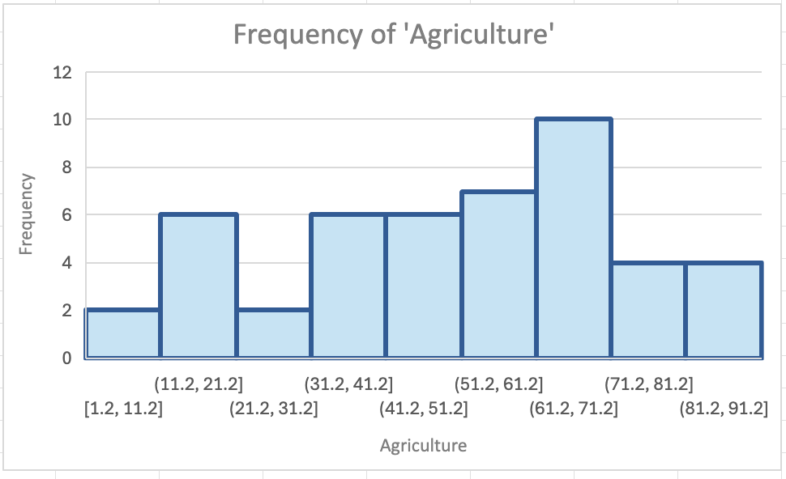

CSC 477 Visualizations
Cleaning the dataset
Before processing and creating visualizations of the dataset, it is important to prep the dataset by cleaning it. There might be N/A values or outliers in the dataset, which needs to be removed and cleaned to create better and more accurate visualizations.
To clean the data, there are a few things that can be done: - Finding and highlighting NA values by selecting the range of cells and doing ‘Conditional Formatting’ to ‘Highlight Cells Rules’. - Removing NA values by using the ‘Find and Replace’. Find ‘NA’ and replace it with ‘0’. - Using IF function to check for NA values and replace it accordingly. Ex: =IF(A2=“NA”, “0”, A2)
Additionally, upon converting the Swiss dataset from a .csv format into an Excel, the first column of the dataset became combined into one cell.
I fixed the titles that are separated by commas in the one cell by separating the titles into the different respective columns.

Context of dataset
Before creating plots and visualizations of the dataset, it is important to know what each title in the columns mead and understand the context of the dataset.
https://stat.ethz.ch/R-manual/R-patched/library/datasets/html/swiss.html
The dataset contains 47 French-speaking “provinces” in Switzerland at around 1888. During that year, Switzerland was entering a demographic transition, where its fertility rates was beginning to fall from the typical level of underdeveloped countries. There are 6 variables in the dataset, where variables are scaled from 0 to 100, except Cathloic that is scaled from 0 to 1. The definitions of the dataset are as below:
- Fertility = common standardized fertility measure
- Agriculture = % of males involved in agriculture as occupation
- Examination = % draftees receiving highest mark on army examination
- Education = % education beyond primary school for draftees.
- Catholic = % ‘catholic’ (as opposed to ‘protestant’).
- Infant.Mortality = live births who live less than 1 year.
Creating Different Basic Visualizations
Scatterplot 1 - Fertility and Cathlic appear to cluster in two groups with four outliers
In creating plots, I utilized Excel’s tool of Recommended Charts, which included a scatterplot of ‘Fertility’ and ‘Catholic’. The scatterplot shown below shows two groups of cluster with four outliers.
As shown in the scatterplot, provinces with higher percentage of Catholic people seem to have a slightly higher fertility compared to provinces with low percentage of Catholic people.
Scatterplot 2 - Relationship between infant mortality and percentaage of Catholic people in a province
Based on the scatterplot above, infant mortality and Catholic appear to have no apparent relationship. However, provinces with higher percentage of Catholic population appear to has a slighly higher infant mortality, with a few provinces having 25 and more live births in a year. Meanwhile, the provinces with a low percentage of Catholic population appear to have infant mortality mostly in the 15-25 range.
Aside from that, the provinces in Swiss appear to have either a very high percentage of Catholic population or a very low percentage of Catholic population, with the scatterplot showing two clusters on the lower end of Catholic percentage (0-20%) and a higher end of Catholic percentage (80-100%). What do you observe?
Bar Charts
As mentioned in the discussion above, the provinces in Swiss appear to have either a very high percentage of Catholic population, or a very low percentage of Catholic population. The bar chart shows a high frequency within the 2.15-7.15% of Catholic population that gradually decreases as the percentage approaches 17.15-22.15 and gradually increases again as it appraoches the 87.15-92.15 percentage of Catholic population. The bar chart above better visualize the two groups of highly populated Catholic province or lowly populated Catholic province.
Line Chart
The line chart above clearly shows that there is a direct relationship betweeen examination and education. As the percentage of education beyond primary school for draftees increases, the percentage of draftees receiving highest mark on army examination also increases. The two variables showcase a positive directly correlated relationship. Aside from that, the graph also shows that the 46th province outperformed all of the other provinces with the highest percentage of education beyond primary school for draftees and also the highest percentage of draftees receiving highest mark on army examination. The 46th province is followed by the 42th province which has the second highest percentage ofo education beyond primary school and second highest percentage of draftees receivving highest mark on army examination.
Pie Charts
The pie chart does not really visualize the agriculture data well, as there are too many percentage classification of males involved in agriculture occupation. However, the pie chart can be made better by making the classifications into 5 groups to see which range of percentage of males invovled in agriculture occupation is higher among the other provinces.
Histograms
 The histogram shows a slighly negative skew on the frequency of males involved in agriculture as occupation. The majority of the provinces have males involved in agriculture on the 61.2-71.2% range. The 1.2-11.2% range and the 21.2-31.2% range of males involved in agriculture have the lowest frequency.
What plot represent better the data? why?
There isn’t any plot that is more superior that the other, but it wholly depends on the variables being plotted. For instance, the relationship between examination and education can be bettter represeted using a line chart, as a line chart shows a more visible distinction between the variable of examination and education. If using a scatterplot, the many plots in the chart may cause the distinction between the two variables to be less visible, as the two variables are directly correlated and have values very closely to one another.
On the other hand, using a scatterplot can better highlight the two groups of highly-populated Catholic provinces and lowly-populated Catholic provinces better than a barchart. The scatterplot can visualize the two groups of clusters on opposite ends, highlighting there there are two major groups in the Swiss: Catholic heavily-populated province or Protestant heavily-populated province
Therefore,different plots have different uses and can highlight the relationship of some variables better than the other, depending on the context and relationship of the varaiables being plotted. It is important to explore the different relationships of variables using different charts and plots to better visualize the relationships of the variables in the dataset.